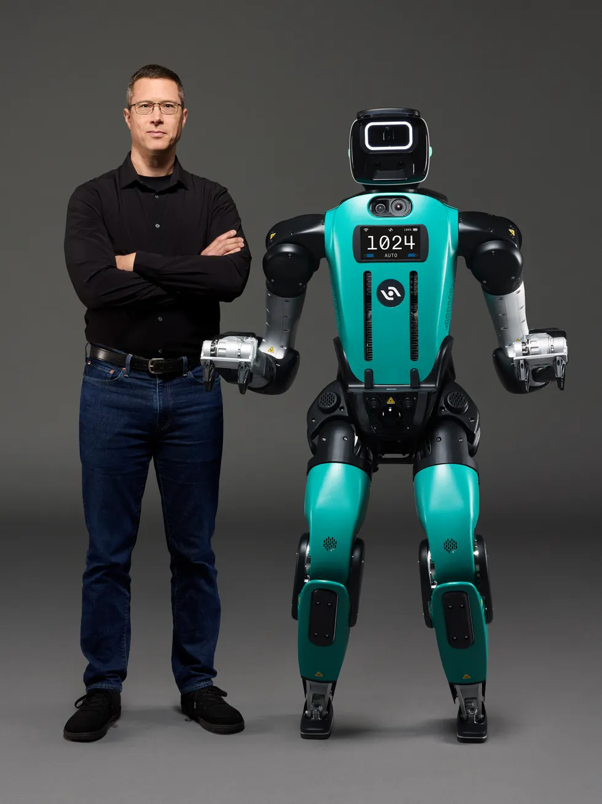

EMBODIED AI WEEKLY / 具身智能周报
具身智能前沿观察
2026年10月25日 · 全球具身智能情报精选

SIGNAL / 本周风向标
本周具身智能硬件与核心模型研发加速双向收敛。一方面，以Agility Digit 5和特斯拉Optimus为代表的本体玩家正在跨越规模化试产与工业级部署门槛；另一方面，以Eka Robotics和Dream Labs为代表的初创团队正加速攻克结合力觉感知与跨本体迁移的物理AI模型，具身基础设施与真实物理世界交互能力成为资本新风口。
BRIEF 01.01
Agility Robotics发布Digit 5人形机器人，加速推进规模化实用落地

▲ 图片来源：IEEE Spectrum Robotics
由俄勒冈州立大学机器人实验室孵化的机器人公司Agility Robotics正式推出了新一代人形机器人Digit 5。
公司联合创始人Jonathan Hurst表示，Digit 5被设计为首款能够安全、经济且大规模从事有用工作的人形机器人，目标是为工业界引入数万台人形机器人提供可行的工程基石。
影响解读
Digit 5的亮相标志着人形机器人正在从概念验证逐步走向满足工厂安全与成本效益的规模化交付阶段，将直接考验仓储物流及制造环境的实际ROI。
信息来源：IEEE Spectrum Robotics
BRIEF 01.02
特斯拉在加州启动Optimus机器人生产，全面加速AI与硬件研发
最新财务数据显示，特斯拉在利润下滑43%、营收持平的情况下，持续大幅增加研发开支，全面加速Optimus机器人、人工智能及自动驾驶项目的推进。
目前特斯拉已正式在加州工厂启动Optimus机器人的生产流程，将其作为下一阶段核心增长战略的重要支柱。
影响解读
特斯拉在利润承压期依然选择重金投向Optimus产线，展示出其押注具身智能的极高战略定力。随着量产启动，其车规级供应链制造能力将向机器人领域外溢。
信息来源：TechCrunch Robotics
BRIEF 02.01
物理AI模型研发商Eka Robotics获1.5亿美元融资，估值达14.5亿美元
机器人研发企业Eka Robotics宣布完成1.5亿美元融资，投后估值达到14.5亿美元。
公司正在研发一种视觉-力觉-动作（VFA）模型，通过大规模强化学习让机械臂建立对物理特性的直觉理解，在抓取多样化物体的表现上展现出高度拟人的灵巧度。
影响解读
单纯依赖视觉的多模态端到端模型在真实交互中存在物理规律理解缺陷，引入高保真力觉感知的物理AI模型正在成为下一代操作智能的核心路径。
信息来源：The Robot Report
BRIEF 02.02
Dream Labs获9000万美元融资并推出跨本体Dream API
机器人AI初创公司Dream Labs宣布筹集9000万美元，并同步发布Dream API接口服务。
官方表示，其自研的Dream-1 AI模型能够兼容不同制造商的机器人本体，使不同架构的机器人之间实现学习成果的高效迁移。
影响解读
跨本体通用基础模型的商业化尝试，将推动具身智能软硬件解耦生态的建立，大幅降低下游集成商适配特定算法的边际成本。
信息来源：The Robot Report
BRIEF 03.01
农机巨头AGCO将在堪萨斯工厂试点部署Agility Digit人形机器人
全球农业装备制造商AGCO宣布将与Agility Robotics展开试点合作，计划在其位于堪萨斯州的农机生产设施中引入Digit人形机器人。
该试点项目预计将于2027年正式启动，重点测试人形机器人在实际高端农机装配车间中的协同作业表现。
影响解读
重工与农机制造领域的复杂工况通常对柔性自动化有极高要求，传统AGV或固定工业机器人难以覆盖，Digit进驻AGCO将为人形机器人在非标准工业场景验证提供重要样本。
信息来源：The Robot Report
BRIEF 03.02
Gecko Robotics斩获美国海军3亿美元合同
特种工业检测机器人企业Gecko Robotics获得了来自美国海军价值3亿美元的长期合同。
Gecko表示，该合同证明了军方对其机器人关键作业能力与实效交付水平的高度认可，将进一步拓展机器人在高危密闭设施维护中的应用。
影响解读
特种巡检检测属于目前具身硬件商业化闭环最快的细分赛道之一，大额长期订单的签署印证了机器人在极端物理维护领域的确定性价值。
信息来源：The Robot Report
EDITOR'S PERSPECTIVE
人形机器人正在脱离纯粹的实验室Demo与单台静态炫技，快速转入以产线级量产和经济性实用为衡量尺度的深水区。Agility推出针对规模化经济性的Digit 5，特斯拉则顶住利润压力在加州开启Optimus投产，这说明领先硬件团队的工作重心已全面转向供应链一致性、耐用度与制造成本控制。
软件层面，以Eka Robotics为代表的'视觉-力觉-动作（VFA）'和Daimon Robotics的触觉智能布局表明，具身智能正在经历从'看得懂'向'摸得透'的范式演进。缺乏力反馈与物理世界感知的大模型很难实现复杂操作的闭环，随着物理AI大模型与跨平台通用API的演进，本体与脑部的商业分工轮廓正变得愈发清晰。
EMBODIED AI WEEKLY · 持续观察具身智能最前沿